Arka
A B2B technology distribution platform built to demonstrate production-grade backend engineering: Clean Architecture, Domain-Driven Design, event-driven workflows, and a real AWS deployment.
Arka started as a modular monolith and evolved into two cooperating services as the domain boundaries became clear:
arka-auth
Authentication, authorization, user identity, email verification, and password reset.
arka-core
Business domain: orders, products, inventory, customers, suppliers, shipping, and reporting.
Each service owns its own database, its own Clean Architecture layering, and validates
JWTs locally and statelessly —
core-service never calls back to auth-service to check a
token.
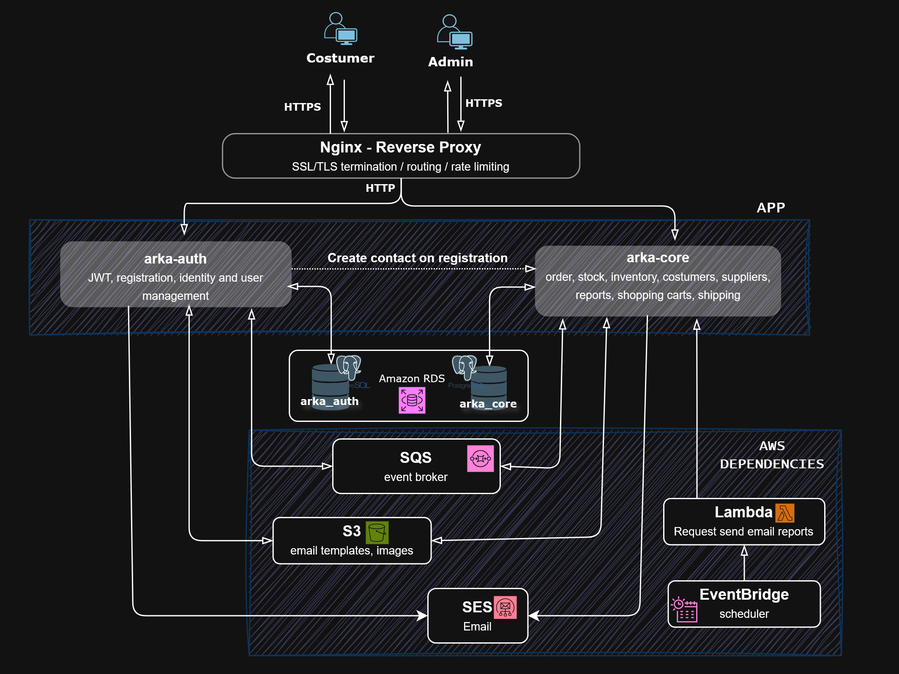
🔍 Clic para expandirKnown Limitations & Roadmap
Being upfront about what's intentionally incomplete:
- No frontend yet — API-first development; a minimal admin dashboard is planned
-
No combined
docker-compose.ymlfor one-command local setup across both services - Notification flow partially migrated to event-driven — further consolidation planned
- Single-instance ECS deployment (EC2, min=desired=max=1) — a deliberate MVP cost tradeoff, not an oversight
- No distributed tracing across the two services yet (correlation IDs planned)
- Infrastructure provisioned manually — Terraform is planned for reproducible, fast environment setup
Where to go next
Use the sidebar to explore the system in depth:
- Architecture — how the codebase is structured internally
- System & Cloud — how it's deployed, networked, and shipped
- Data & Flows — how data is modeled and how work moves through the system
- Security — how access is controlled
Clean / Hexagonal Architecture
Both services follow the same layered architecture, keeping business logic independent of frameworks and infrastructure. Each service is a modular Gradle project, designed to allow decoupling and facilitate extraction into a standalone microservice if needed, thanks to the isolation of external dependencies.
domain/model → entities, enums, exceptions, value objects — no Spring dependency domain/usecase → use cases, DTOs (In/Out, Command/Event), mappers, gateways infrastructure/ driven-adapters/ → jpa-repository, aws-provider, core-service-provider, security-provider entry-points/ → api-rest, security, sqs-listener main-app/boot → Spring Boot entry point, wiring, configuration
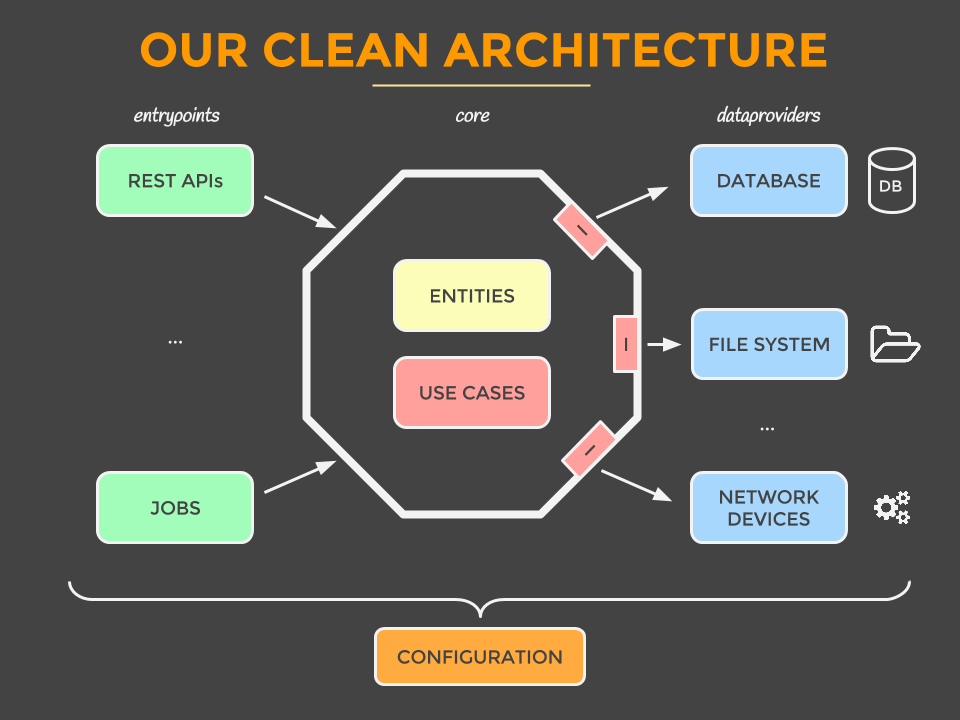
🔍 Clic para expandir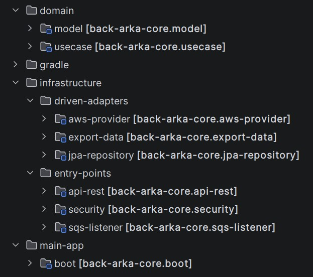
🔍 Clic para expandirKey decisions
- Domain layer is framework-free — no Spring annotations, no JPA, no HTTP concepts. Gateways (ports) are interfaces implemented by adapters in the infrastructure layer.
- Dependency direction is inward — infrastructure depends on the domain; the domain never depends on infrastructure.
- MapStruct everywhere for layer-to-layer mapping, keeping conversion logic out of business code.
-
DTO naming convention is deliberately split:
In/Outfor synchronous use cases,Command/Eventfor asynchronous, SQS-published flows. -
Global exception handling
(
GlobalExceptionHandler) with a consistentErrorResponseshape — no stack traces leak to clients.
Why two services, one pattern
arka-auth and arka-core are deployed and scaled independently,
but both apply the exact same internal layering. That consistency means a change in one
service's structure is a change a reviewer already understands from the other.
Domain-Driven Design
Domain entities enforce their own invariants — invalid states are rejected at construction, not caught later by validation layers.
Entity construction
Entities use private builders with static factory methods (create()) so an
entity can never exist in an invalid state. There is no public no-arg constructor to
fall back on.
State machines in enums
Status enums (OrderStatus, ShippingStatus,
ShoppingCartStatus) own their own transition rules via
validateEditable() / transitionTo(), making illegal state
transitions a domain-level concern rather than something scattered across use cases.
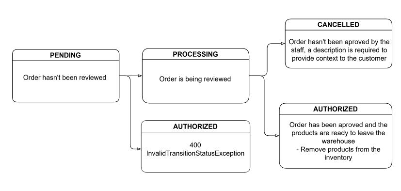
🔍 Clic para expandirOwnership modeling
A Company has a list of Contacts. A Contact may
or may not be linked to a registered User — linkage is resolved by email,
not by a shared database id, since the two services never share primary keys across
their boundary. This is what makes the
User → Contact → Company → Order
ownership check possible: a user can only access orders belonging to their own company.
Cloud Architecture
Arka runs entirely on AWS, it has a low-cost architecture fitting the project's scale.
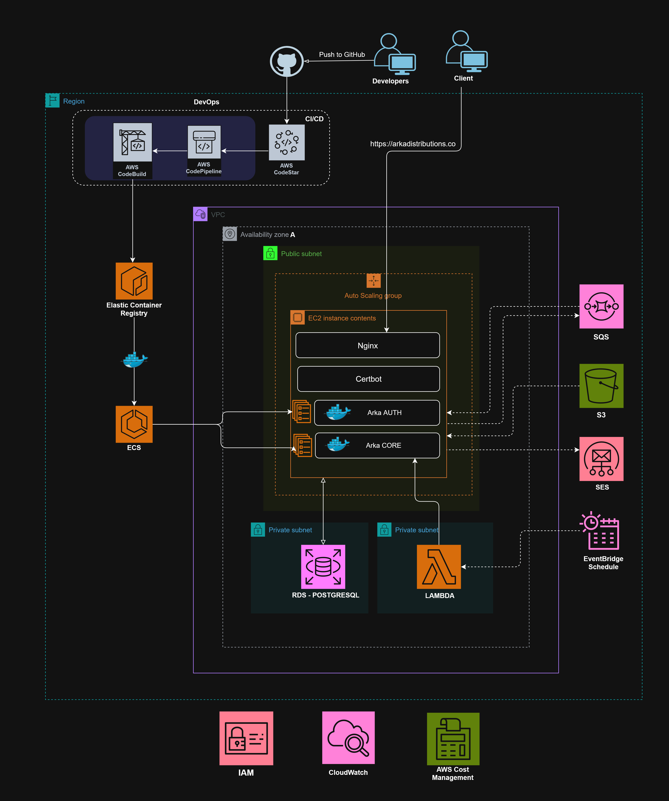
🔍 Clic para expandir| Component | Service | Purpose |
|---|---|---|
| Compute | ECS on EC2 | Self-healing Auto Scaling Group (min = desired = max = 1), chosen over Fargate for cost |
| Database | RDS (PostgreSQL) | One instance per service |
| Async messaging | SQS | Decouples report generation and notifications from the request thread |
| Scheduling | EventBridge + Lambda | Triggers weekly report generation on a schedule |
| SES | Sends verification, password reset, and order-status emails | |
| Storage | S3 | Hosts HTML email templates |
| CI/CD | CodePipeline → CodeBuild → ECR | Builds, tests, and deploys on every push |
Roadmap
Infrastructure is currently provisioned by hand through the AWS console. Terraform is planned next so the whole environment can be torn down and rebuilt reproducibly.
Infrastructure & Networking
Both services sit behind a single reverse proxy, with network-level isolation for anything that shouldn't be publicly reachable.
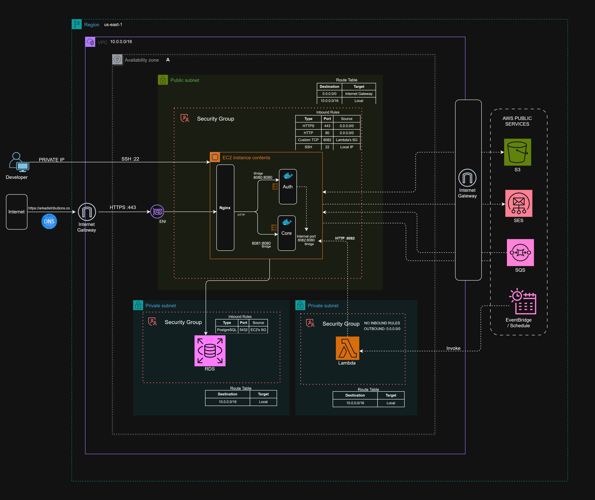
🔍 Clic para expandirReverse proxy
-
Nginx routes public traffic to each service by path (
/api/v1/auth/...vs/api/v1/...), avoiding Spring context-paths. - Certbot (Let's Encrypt) handles TLS certificate issuance and renewal — all public traffic is HTTPS.
-
Rate limiting is enforced at the Nginx layer
(
limit_req_zone) rather than per-service, so every endpoint is covered without duplicating logic in each codebase. -
Load balancing is handled by Nginx
upstreamblocks. -
API docs are served from a dedicated path (
/auth/docs,/core/docs) kept separate from the versioned API paths.
Internal-only communication
Endpoints that should never be reachable from the public internet — report triggers, the
inter-service Contact creation call — are exposed only on private IPs
within the VPC. Security groups act as the actual firewall here: even
if an application-level check were missing, the network itself refuses the connection
from outside the VPC.
CI/CD Pipeline
Every push to prod is built, tested, and deployed through the same automated path.
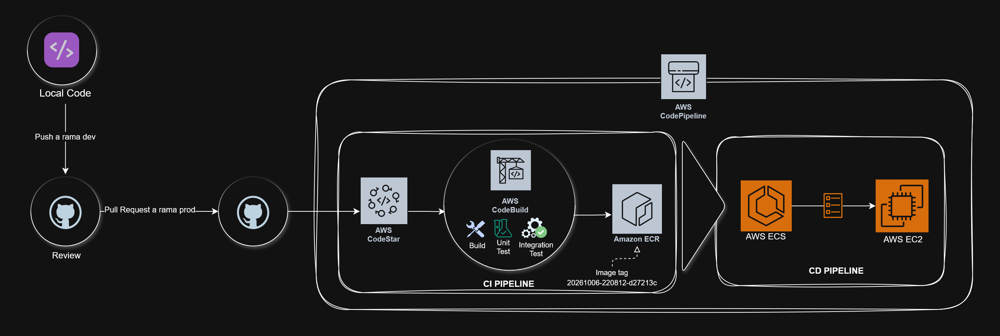
🔍 Clic para expandir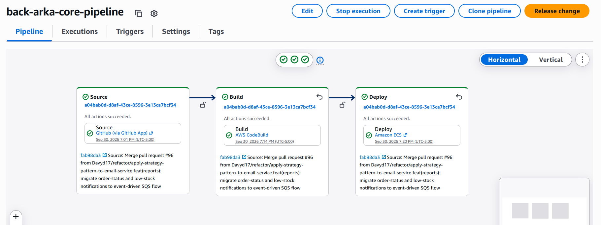
🔍 Clic para expandir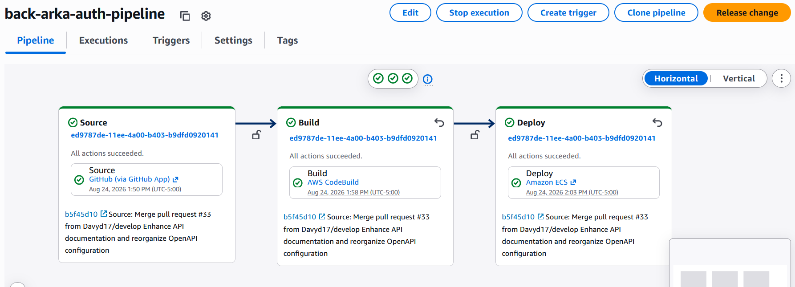
🔍 Clic para expandir- Source — CodePipeline picks up a push to the tracked branch.
-
Build & test — CodeBuild runs
./gradlew testbefore packaging; a failing test blocks the rest of the pipeline. - Image build — a multi-stage Docker build produces a slim runtime image (headless JRE), pushed to ECR.
- Deploy — ECS pulls the new image and replaces the running task on the EC2 instance.
Why this shape
Tests run in CI, not just locally — a service that compiles but fails its test suite never reaches ECR. The build stage uses a full JDK image (needed for the Gradle toolchain); only the production stage uses the smaller headless JRE image.
Database Model
Each service owns its own schema — there is no shared database.
Arka Core ER diagram
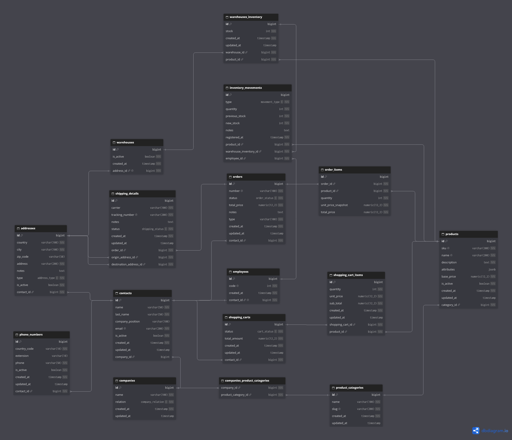
🔍 Clic para expandirArka Core by domain
The same model split into three domains. Tables shown with only a few columns are references to a table defined in another domain.
Contacts & companies
5 tables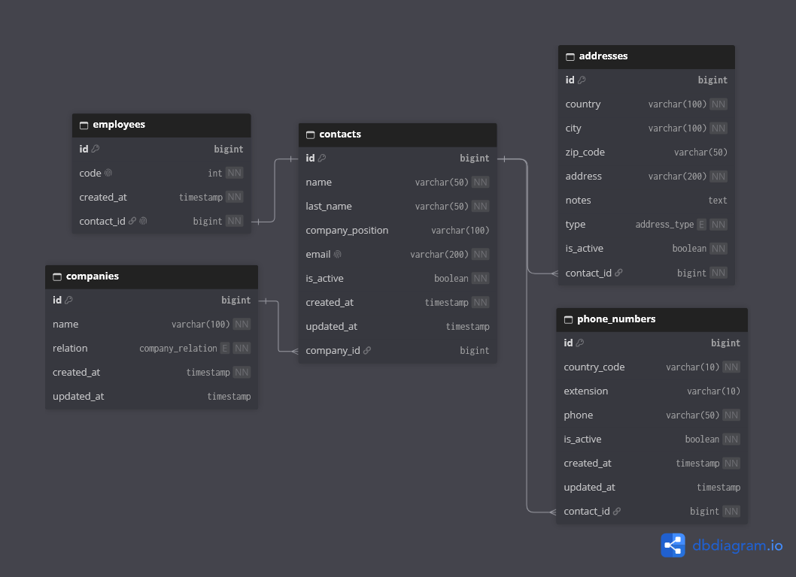
🔍 Clic para expandirCatalog & inventory
6 tables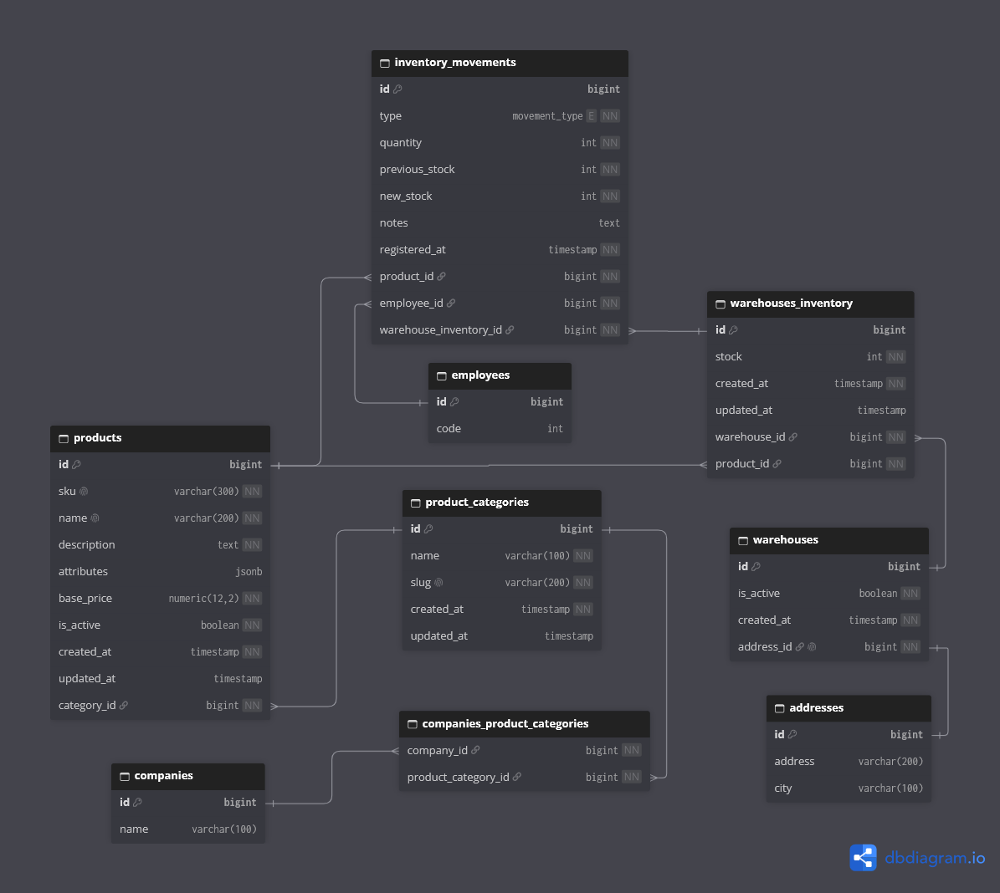
🔍 Clic para expandirOrders & cart
5 tables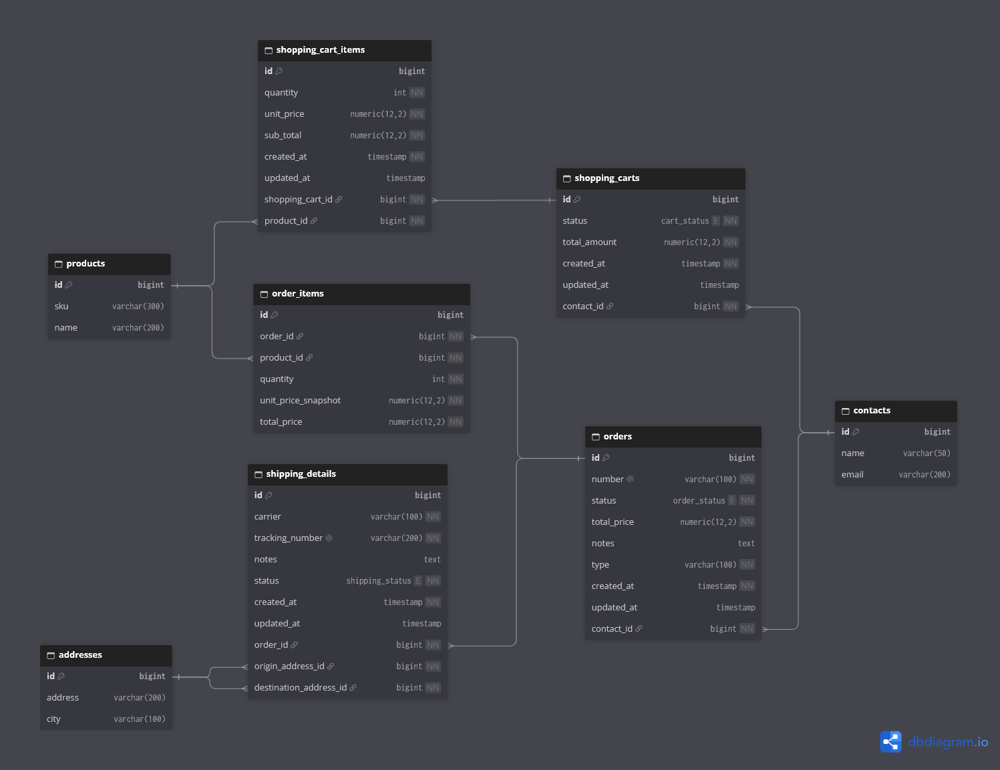
🔍 Clic para expandirArka Auth ER diagram
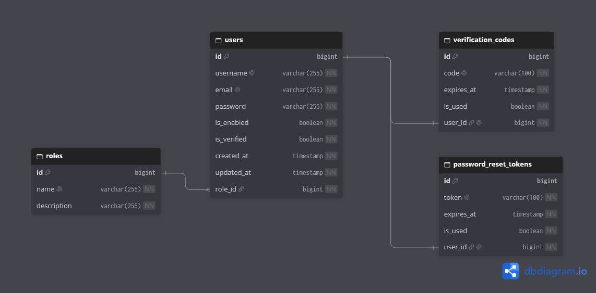
🔍 Clic para expandirCross-service linkage
A Contact in arka-core is linked to a User in
arka-auth by email, not by a shared foreign key — the two
services don't share primary keys across their boundary. A Contact without
a matching registered user simply has no linked account yet.
Nullable-by-design fields
Several Contact fields (company_position,
company_id) are nullable by design: a contact can exist before it's tied to
a company or before it registers as a user. This reflects a real intermediate state, not
missing data.
Migrations
Schema changes are versioned with Flyway. Each service's migration history is independent, including dedicated seed-data migrations used by the integration test suites.
Event-Driven Flows
Reports and order-status notifications run asynchronously through Amazon SQS instead of blocking the originating request.
Use case → publishes a *RequestedEvent → Amazon SQS → listener consumes it
→ downstream use case (report generation / email) runs independently
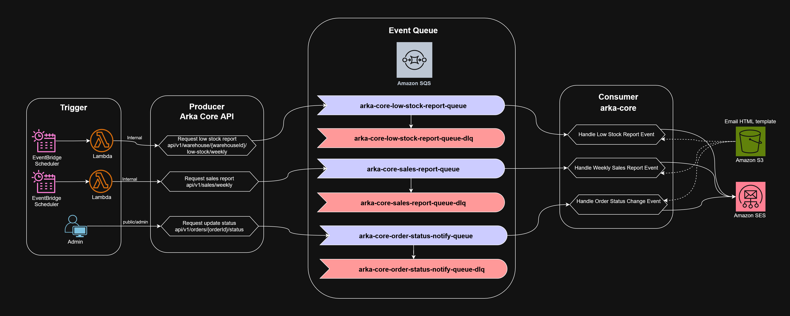
🔍 Clic para expandirWhy SQS over Kafka
Kafka was considered and deliberately set aside for this stage of the project. SQS gives the same core benefit — decoupling slow or unreliable downstream work (SES calls, report queries) from the request thread — with far less operational complexity, which matters for an MVP on a tight timeline.
Pluggable report formats
Report generation uses a factory/strategy pattern to select an output format. Only CSV is implemented today, but the abstraction means PDF (or others) can be added later without touching the use cases that request a report.
Naming convention
Synchronous use cases use In/Out DTOs. Asynchronous,
SQS-published flows use Command/Event
instead — a deliberate, scoped distinction rather than a codebase-wide rename.
Key Flows
Sequence diagrams for the flows worth seeing step by step.
User Registration
arka-auth creates the User, then calls
arka-core synchronously to create the linked Contact. If
that call fails, the User is rolled back via a compensating transaction
so no orphaned account is left behind.
Order Status Update
A status change triggers an
OrderStatusUpdatedRequestedEvent
published to SQS, which a listener picks up to send the notification email
independently of the original request.
Password Reset
A time-limited token is generated, stored, and emailed via an S3-stored HTML template through SES; the token is single-use and expires automatically.
Weekly Report Generation
EventBridge triggers a Lambda on a schedule, which publishes a report-requested
event; a listener in
arka-core generates the report (CSV today) and delivers it.
Authentication & Authorization
Stateless JWT auth, validated independently by each service.
JWT handling
-
Tokens are issued by
arka-authand validated locally by whichever service receives a request —arka-corenever calls back to check a token. -
Expired or malformed tokens are caught inside the JWT filter itself and turned into a
structured JSON error response (
401), instead of an unhandled exception.
Role-based access control
Two roles — USER and ADMIN — are enforced declaratively in
SecurityConfig. A custom AccessDeniedHandler /
AuthenticationEntryPoint implementation ensures 401/403 responses carry the
same structured JSON shape as every other error in the system.
Network-level isolation
Internal-only endpoints are additionally restricted by private IP + security groups (see Infrastructure & Networking) — authorization isn't only an application-layer concern here.
User Stories
The product backlog driving Arka's backend, organized by module. Kept in the original Spanish as written in the project's backlog document.
Módulo 1 — Gestión de Inventario y Abastecimiento
HU1 — Registrar productos en el sistema
Como administrador, quiero registrar nuevos productos con sus características para que los clientes puedan comprarlos.
- Se debe permitir la carga de nombre, descripción, precio, stock y categoría.
- Validaciones de datos requeridos.
- Mensaje de confirmación tras el registro exitoso.
HU2 — Actualizar stock de productos
Como administrador, quiero actualizar la cantidad de productos en stock para evitar sobreventas.
- El sistema debe permitir modificar el stock de un producto.
- No se deben permitir valores negativos.
- Historial de cambios en el stock.
HU3 — Generar reportes de productos por abastecer
Como administrador, quiero recibir reportes de productos con bajo stock para tomar decisiones de abastecimiento.
- El reporte debe generarse automáticamente cada semana.
- Debe incluir productos con stock menor a un umbral configurable.
- Exportación en formato CSV o PDF.
Módulo 2 — Gestión de Órdenes de Compra
HU4 — Registrar una orden de compra
Como cliente, quiero poder registrar una orden de compra con múltiples productos para realizar mi pedido.
- Se debe validar la disponibilidad del stock.
- Registro de fecha y detalles del pedido.
- Mensaje de confirmación con resumen del pedido.
HU5 — Modificar una orden de compra
Como cliente, quiero modificar mi pedido antes de su confirmación para corregir errores o agregar productos.
- Solo se pueden modificar pedidos en estado "pendiente".
- Se debe actualizar el stock en caso de eliminación de productos.
HU6 — Notificación de cambio de estado de pedido
Como cliente, quiero recibir notificaciones sobre el estado de mi pedido para estar informado de su progreso.
- Notificación por correo o en la plataforma.
- Estados: pendiente, confirmado, en despacho, entregado.
Módulo 3 — Reportes y Análisis de Ventas
HU7 — Generar reportes de ventas semanales
Como administrador, quiero generar reportes semanales de ventas para analizar el rendimiento del negocio.
- El reporte debe incluir total de ventas, productos más vendidos y clientes más frecuentes.
- Exportación en formato CSV o PDF.
HU8 — Identificar carritos abandonados
Como administrador, quiero visualizar los carritos abandonados para contactar a los clientes y recuperar ventas.
- Listado de carritos abandonados con fecha y productos.
- Opción de enviar recordatorio por correo al cliente.
Tech Stack
| Layer | Technology |
|---|---|
| Language | Java 21 |
| Framework | Spring Boot 3, Spring Security, Spring Data JPA |
| Database | PostgreSQL (RDS in production) |
| Migrations | Flyway |
| Messaging | Amazon SQS, AWS EventBridge |
| AWS SES | |
| Storage | Amazon S3 (HTML email templates) |
| Auth | JWT (stateless, per-service validation) |
| Mapping | MapStruct |
| Build | Gradle (multi-module) |
| Containerization | Docker (multi-stage builds) |
| Reverse Proxy / TLS | Nginx, Certbot (Let's Encrypt) |
| CI/CD | AWS CodePipeline → CodeBuild → Amazon ECS |
| Compute | ECS on EC2 (self-healing Auto Scaling Group) |
| Testing | JUnit 5, Mockito, AssertJ, Testcontainers (Postgres), MockMvc |
| API Docs | springdoc-openapi (Swagger UI) |